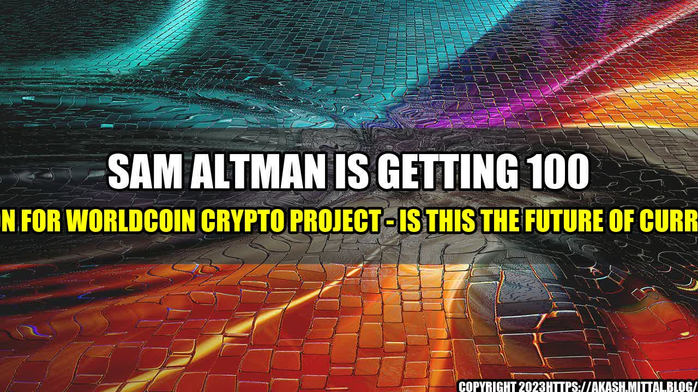

Sam Altman Is Getting 100 Million for Worldcoin Crypto Project - Is This the Future of Currency?

Imagine a world where physical currency is no longer in use. Instead, everything is done through digital transactions. This idea might seem like something out of a science fiction movie, but it's a reality that could soon become commonplace thanks to cryptocurrency.
Cryptocurrency has been around for more than a decade, but it's still a relatively new concept for many people. However, with high-profile individuals like Sam Altman investing millions of dollars into the industry, it's clear that cryptocurrencies are here to stay.
The Story of Sam Altman's WorldCoin Project
Sam Altman is a well-known entrepreneur who made a name for himself as the former president of Y Combinator, a startup accelerator. In 2021, he announced that he would be launching a new cryptocurrency project called Worldcoin.
The primary goal of the Worldcoin project is to create a decentralized digital currency that is accessible to everyone. Altman believes that cryptocurrency has the potential to be the future of currency, but there are still many barriers to entry for the average person.
With Worldcoin, Altman hopes to create a more equitable distribution of cryptocurrencies by using a unique approach to distribution. Instead of relying solely on mining or purchasing, Worldcoin will be distributed through a method called "universal basic income." Essentially, participants will be able to earn Worldcoin by simply existing and contributing to the network in some way.
The project is still in its early stages, but Altman has already secured 100 million dollars in funding. The money will be used to create a team of experts to develop the technology and to fund the initial distribution of Worldcoin.
Quantifiable Examples of Cryptocurrency's Growth
While cryptocurrency is still a relatively new concept, its growth has been staggering over the past few years. Here are just a few quantifiable examples:
- As of April 2021, there are over 4,000 different cryptocurrencies in existence.
- The total market capitalization of all cryptocurrencies (as of June 2021) is over 1.6 trillion dollars.
- Bitcoin, the first and most well-known cryptocurrency, hit an all-time high of nearly 65,000 dollars in April 2021.
- More businesses are starting to accept Bitcoin and other cryptocurrencies as payment, including companies like Microsoft and PayPal.
- The number of people worldwide who own cryptocurrency is estimated to be in the tens of millions.
The Potential Benefits of Cryptocurrency
While cryptocurrency is still a relatively new concept, it has the potential to offer a wide range of benefits. Here are just a few:
- Decentralization: Unlike traditional currency, cryptocurrency is not controlled by a central authority. This means that it's not subject to government inflation or manipulation.
- Increased Privacy: Cryptocurrency transactions can be anonymous, meaning that individuals can protect their identity when making transactions online.
- Accessibility: Cryptocurrency can be used by anyone with an internet connection, regardless of country or financial status.
- Lower Transaction Fees: Cryptocurrency transactions typically have lower fees compared to traditional banking transactions.
- Global Acceptance: Cryptocurrency is accepted worldwide, making it an attractive option for international business transactions.
Conclusion: Three Key Takeaways
- Cryptocurrency is a relatively new concept, but its growth has been staggering. With more and more businesses accepting it as payment, its potential is endless.
- Sam Altman's Worldcoin project is an exciting addition to the cryptocurrency industry. With 100 million dollars in funding, the project has the potential to create a more equitable distribution of cryptocurrencies.
- The potential benefits of cryptocurrency are numerous, including decentralization, increased privacy, accessibility, lower transaction fees, and global acceptance. It's clear that cryptocurrency has the potential to shake up the financial industry and change the way we think about currency.
References and Hashtags
References:
Hashtags: #cryptocurrency #worldcoin #samaltman #futureofcurrency
Article Category: Technology and Finance
Curated by Team Akash.Mittal.Blog
Share on Twitter Share on LinkedIn